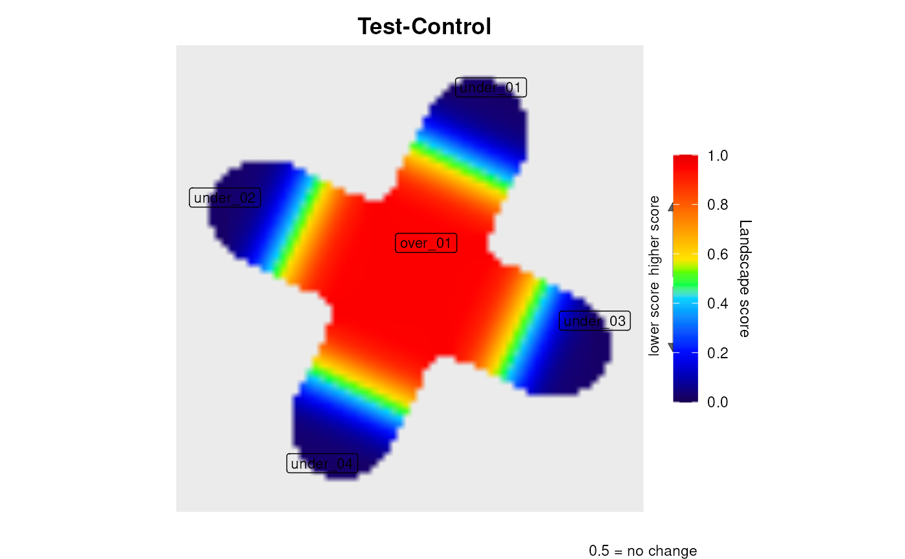

Build a levi-ready network from a plain list of interactions.
levi() draws its landscape over the plane the network occupies, so it
needs a coordinate for every node. When all you have is a list of pairs –
which is what most interaction databases and most collaborators hand over –
this computes a layout with igraph and returns the node and edge
tables ready to pass straight to levi().
A data.frame or matrix whose first two columns
name the endpoints of each interaction, or an igraph graph. Further
columns are ignored.
Character. Layout algorithm: "fr" (Fruchterman-Reingold,
the default), "kk" (Kamada-Kawai), "lgl", "dh" or
"circle".
Logical. Whether to treat the pairs as directed when
building the graph. The layout ignores direction either way. Default
FALSE.
Which two columns of edges hold the endpoints, by
position or by name. Default is the first two.
Invisibly, a list with:
data.frame with name, x and y, the
coordinates scaled to [1, 100].
data.frame with V1 and V2, the endpoints.
the igraph object the layout was computed on.
Pass nodes to networkCoordinatesInput, edges to
networkInteractionsInput and "stg" to fileTypeInput.
Force-directed layouts are stochastic: "fr", "kk",
"lgl" and "dh" give a different arrangement on every call.
Set set.seed() beforehand to reproduce a figure. "circle" is
deterministic.
The layout is an analytical choice, not only an aesthetic one: the same expression values arranged differently produce a different landscape, because levi reads neighbourhoods. Where a curated layout exists, prefer it over a computed one.
# A small network given only as interactions, with no coordinates.
interactions <- data.frame(
from = c("HUB", "HUB", "HUB", "HUB", "N1", "N2", "N3", "N4"),
to = c("N1", "N2", "N3", "N4", "N5", "N6", "N7", "N8"),
stringsAsFactors = FALSE)
set.seed(42)
net <- leviFromEdges(interactions, layout = "kk")
#> Network laid out with 'kk': 9 nodes, 8 edges.
head(net$nodes)
#> name x y
#> 1 HUB 50.50000 50.50000
#> 2 N1 38.79074 76.13341
#> 3 N2 24.86659 38.79074
#> 4 N3 62.20926 24.86659
#> 5 N4 76.13341 62.20926
#> 6 N5 27.88855 100.00000
expression <- data.frame(
ID = c("HUB", paste0("N", 1:8)),
Test = c(200, 200, 200, 200, 200, 5, 5, 5, 5),
Control = c(10, 10, 10, 10, 10, 200, 200, 200, 200))
res <- levi(
networkCoordinatesInput = net$nodes,
networkInteractionsInput = net$edges,
fileTypeInput = "stg",
expressionInput = expression,
geneSymbolInput = "ID",
readExpColumn = readExpColumn("Test-Control"),
resolutionValueInput = 20,
smoothValueInput = 50)

head(res$scores)
#> Gene X Y LandscapeScore Rank
#> 1 HUB 50.50000 50.50000 0.9524 1
#> 2 N1 38.79074 76.13341 0.8983 2
#> 3 N2 24.86659 38.79074 0.8983 3
#> 4 N3 62.20926 24.86659 0.8983 4
#> 5 N4 76.13341 62.20926 0.8983 5
#> 6 N5 27.88855 100.00000 0.1058 6